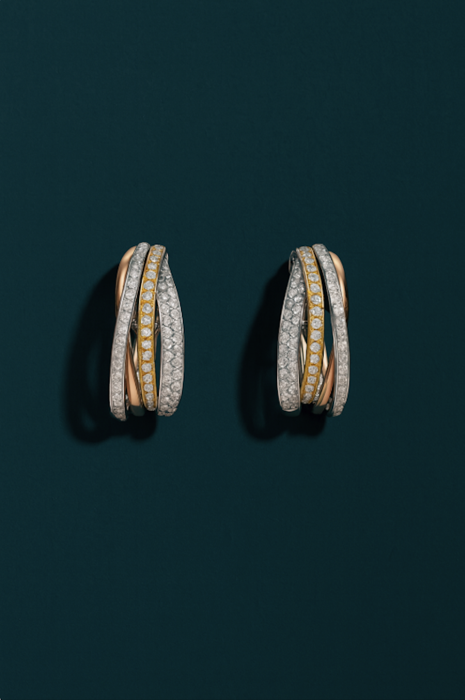
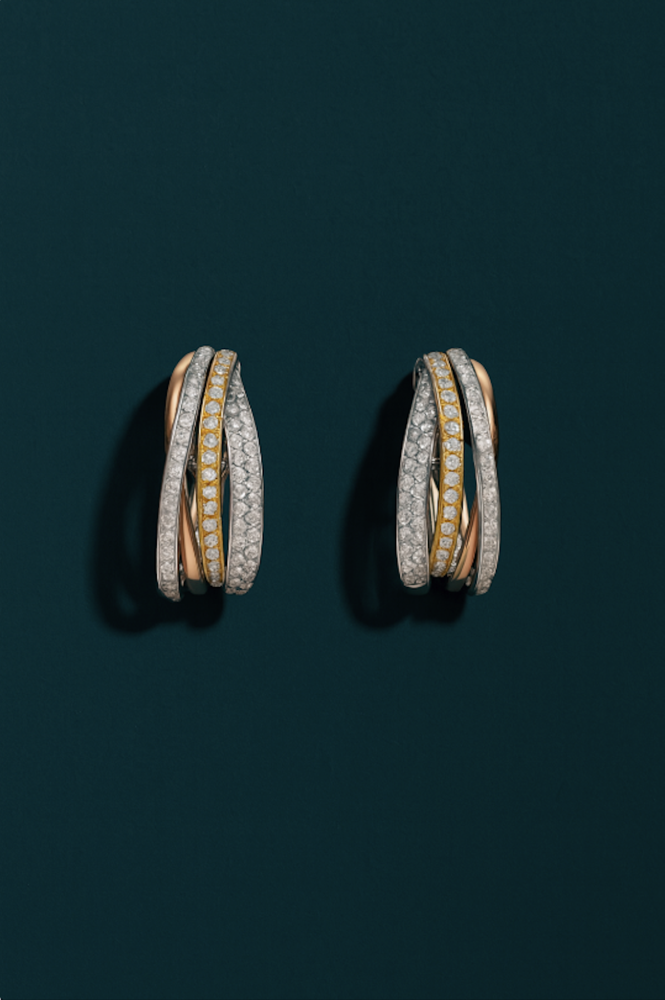

2024 Jewelry Trends
Every year, Kool Concepts decodes the shifts shaping the jewelry world—looking to the past, tracking the present, and forecasting what’s next. 2024 is the year of bold expression: pieces that redefined everyday jewelry with a mix of nostalgia, maximalism, and playful experimentation. From chunky gold chains and colorful gemstones to bows, hearts, and sculptural forms, the trends celebrated personality through statement styling. It was a season of revival—where vintage inspirations collided with modern craftsmanship, and where jewelry became less about formality and more about joy, layering, and individuality.
Eternal Brilliance
True Brilliance, Redefined for Today.
Eternal Brilliance is a celebration of modern luxury—where sustainability meets timeless design. Lab-grown diamonds are no longer a niche; they’ve become a symbol of conscious elegance, offering the same fire, clarity, and beauty as mined stones, but with a story that resonates with today’s values.
This collection reframes diamonds for a new generation: less about exclusivity, more about accessibility, individuality, and responsibility.
Why Now?
Cultural Shift in Value: Jewelry buyers are moving away from the idea that rarity defines worth, and toward designs that align with personal meaning and responsible consumption.
Mainstream Acceptance: With leading fashion houses and jewelers embracing lab-grown diamonds, 2024–2025 marks the tipping point where they are not just an alternative, but a first choice.
Why It Will Be Popular
Sustainability Matters: Consumers—especially Gen Z and Millennials—are prioritizing ethical and eco-conscious purchases.
Luxury Within Reach: Lab-grown diamonds offer larger carat sizes and better quality at more attainable price points, making fine jewelry feel more accessible.
Personalization Trend: Lab-grown’s flexibility (in shape, color, and size) aligns seamlessly with the movement toward individualized and custom pieces.
Key Design Elements Across the Collection:
Modern Classics, Reimagined
Modern classics reimagined with lab-grown diamonds—blending timeless silhouettes (solitaires, hoops, tennis lines) with innovative touches like mixed metals, architectural forms, and versatile layering.


Fusion
Where Contrasts Create Harmony
Fusion celebrates the art of contrast—where gold, silver, and rose tones collide to create something entirely new. Mixing metals was once considered unconventional, but in 2024 it has become a declaration of individuality, freedom, and modern elegance.
This collection invites wearers to break away from the status quo of “matching sets” and instead embrace layering, stacking, and styling across tones. By weaving together diverse metals,Fusion reflects the complexity of contemporary identity—fluid, versatile, and unapologetically personal.
Why Now?
Breaking Away from Tradition: Jewelry lovers are no longer bound by outdated rules of “matching metals.” Mixing tones reflects a cultural shift toward self-expression over conformity
Versatility for Modern Living: With fewer people buying rigid “sets,” mixed metals allow one piece to work across an entire wardrobe.
A Mirror of Identity: Just like people contain multitudes—heritage, experiences, emotions—jewelry that blends metals tells a story of individuality and authenticity.
Trend Momentum: Seen on runways and in street style alike, 2024 marks the moment when mixed metals shift from rule-breaking to trend-making.
Key Design Elements Across the Collection:
Crafted in Contrast
The Fusion collection thrives on contrast, blending yellow, white, and rose gold into designs that feel both timeless and boldly modern. Each piece is crafted to encourage layering and stacking, allowing wearers to mix, match, and build looks that reflect their individuality. By breaking away from rigid rules of uniformity, the collection transforms metal into a language of versatility, self-expression, and everyday elegance.


 
